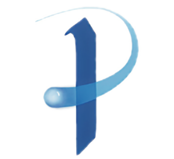

<div class="flex flex-col items-center justify-center w-full h-full">
    <div class="w-full max-w-3xl">
        <div class="max-w-none mx-auto prose prose-sm">
            
            <h1>Piattaforma Proxima</h1>
            <p>
                Il progetto, prevede un sistema di supporto per le persone “fragili”. Le fragilità coinvolte possono includere patologie croniche, disabilità, multimorbilità, solitudine. Si propone un supporto realizzato attraverso servizi di teleassistenza con monitoraggio ambientale, monitoraggio delle attività e videconferenze realizzate attraverso smartphone
            </p>
            <p>
                Gli Obbiettivi del Progetto sono:
            </p>
            <ol>
                <li>
                    Ridurre l’isolamento sociale della persona fragile
                </li>
                <li>
                    Estendere il supporto delle cooperative di servizi sociali anche al di fuori di quello “in presenza” alla persona fragile
                </li>
                <li>
                    Sperimentare e dimostrare la possibilità di realizzare un sistema economicamente sostenibile dalla persona, dai servizi socio sanitari e/o dai familiari del paziente fragile che fornisca supporto socio sanitario alla persona fragile
                </li>
            </ol>
        </div>
        <div>
            <a
                class="mt-8"
                mat-flat-button
                [color]="'primary'"
                [routerLink]="'/sign-in'">
                <span>Accedi Alla Piattaforma</span>
                <mat-icon
                    class="ml-2 icon-size-5"
                    [svgIcon]="'heroicons_solid:arrow-narrow-right'"></mat-icon>
            </a>
        </div>
    </div>
</div>
